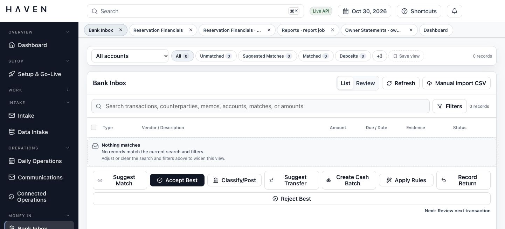
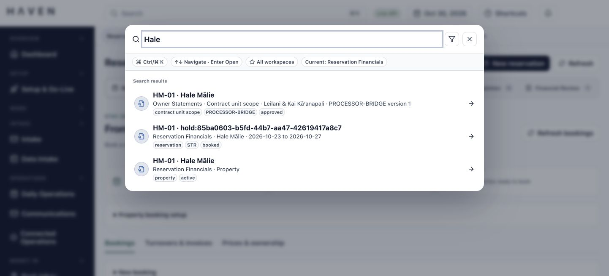
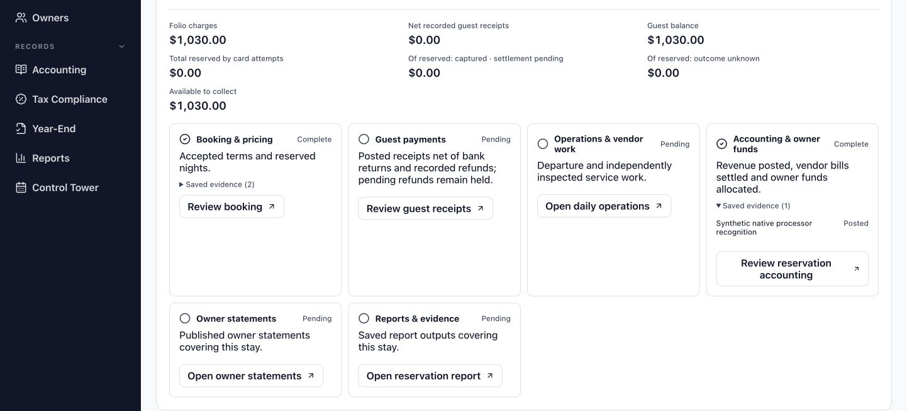
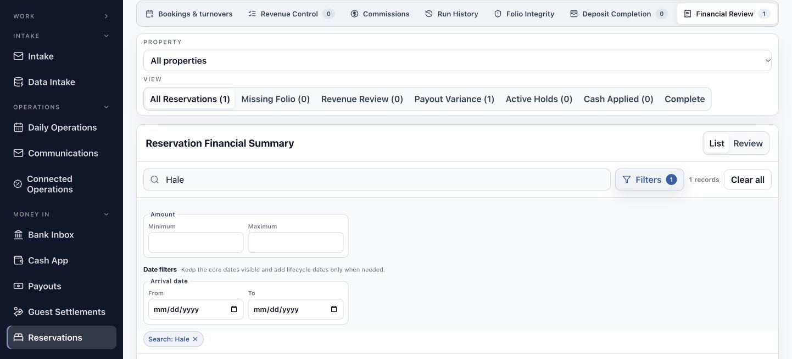
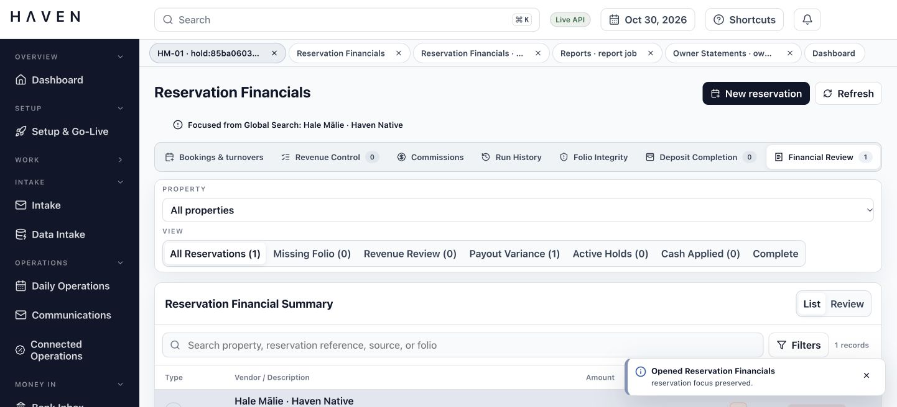

HAVEN Navigation Guide
Find an existing fictional stay, recognize its financial position, inspect the evidence behind a stage, and return to open work without creating a transaction.
For Reservation staff and bookkeepers learning the local preview.
- HAVEN is already running locally and you have access to its staff workspaces.
- For the illustrated route, the existing Hale Mālie demonstration stay is available. It runs from 23 to 27 October 2026.
- No payment credentials, new booking, or financial submission is needed for this orientation.
Begin with an existing stay
Follow a short reading route before learning how to create or change a transaction.
What you will learn
By the end of this guide, you should be able to distinguish the main navigation from a workspace's own views, choose the correct reservation in Search, read its current charges and guest balance, and inspect the evidence behind a lifecycle stage. These skills help you recover your place when a financial question leads into another part of HAVEN.
Keep one example in view
The screenshots use the existing fictional Hale Mālie stay, 23 to 27 October 2026. It has $1,030 in current charges, no recorded guest receipts, and a $1,030 guest balance. The record is marked as a Stripe TEST rehearsal. These figures describe the local example; they are not a real guest transaction or a production fee policy.
Start from the running preview
Open the local HAVEN app at http://localhost:5173. This guide assumes it is already running. Your screen can open in a different workspace or retain earlier tabs and filters. Start with global Search in the top bar. If the demonstration stay is absent, use the workspace map to explore existing records and ask the person managing the preview which example to use. Do not create a replacement booking to make the screenshots match. If Stripe test mode setup required appears, continue reading the stay and its evidence. That setup belongs to the later payment workflow; it does not prevent this orientation.
An alternate entry point
From the sidebar, Money In > Reservations also opens Reservation Financials. Choose Bookings & turnovers > Bookings, then select the existing stay to read its lifecycle from the booking area. Search opens the Financial Review route shown in this guide.
Reading a record, changing a view, and expanding evidence are the tasks here. Booking, payment, refund, and posting procedures belong to later guides.
Recognize the parts of the workbench
Use each navigation layer for a different question.
Which area do I need?
The sidebar groups work by purpose. Expand a section heading, then select its workspace. Scroll to reach sections below the visible area. On narrower screens, the navigation can run across the top. Available destinations depend on your permissions.
Which record do I need?
Search in the top bar opens the Command palette. It searches across supported records and offers workspace shortcuts. The date, Shortcuts, and notifications sit nearby. Live API identifies the app's data connection; it does not establish that real card payments or bank execution are enabled.
Where was I working?
Work tabs below the top bar return you to open areas or individual records. Inside the active workspace, its own views, record search, filters, and review panels help narrow the work. A workspace view and a work tab are separate controls.

The illustration is Bank Inbox with no matching records. Use it to recognize the layout; the guided stay is in Reservation Financials.
Choose the reservation in Search
A property name can return several kinds of record. Identify the stay before opening it.
Do: Select Search in the top bar. You can also press Command+K on a Mac or Ctrl+K on Windows.
You should see: The Command palette opens with a search field and workspace choices.
Do: Enter Hale and let the record results load.
You should see: The illustrated example returns an owner-related record, a reservation, and a property. Their destination and type appear with each result.
Do: Select the result marked reservation with Hale Mālie and the dates 2026-10-23 to 2026-10-27. Use its type and dates to distinguish it from the property and owner-related results.
You should see: Reservation Financials opens with Financial Review selected. A message identifies the record focused from Global Search.

The displayed reservation reference includes a generated hold identifier. Match the property, dates, and reservation type together. Selecting the first similar name can open a different kind of record.
Confirm the stay and read its balance
The screen title tells you the workspace; the selected record tells you which stay its figures describe.
Do: Check the Reservation Financials title, the Global Search focus message, and the selected Hale Mālie record. Confirm the dates are 23 to 27 October 2026.
You should see: The selected record and its dates identify the same fictional stay you chose in Search.
Do: Scroll below the financial summary list to Reservation lifecycle. Read the accepted terms, Folio charges, Net recorded guest receipts, and Guest balance.
You should see: The example shows $1,030 in charges, $0 in recorded receipts, and $1,030 still due. The charge total is not a payment confirmation.
Read the right financial measure
Card-attempt holds and amounts available to collect are shown separately. Available to collect describes remaining collection capacity, not owner cash. If a card payment were later confirmed, a separate bank-posting review would still be required. Those later events have not occurred for this example.

A past departure date does not establish departure, inspection, payment, or statement completion. Use the saved stage records.
Inspect a stage and its saved evidence
A status belongs to one stage. Read what it establishes before moving to the next piece of work.
Do: In Reservation lifecycle, compare Guest payments with Accounting & owner funds.
You should see: The example shows Guest payments as Pending and Accounting & owner funds as Complete. The accounting entry records earned income; it does not establish that the guest paid the $1,030.
Do: In Accounting & owner funds, expand Saved evidence (1).
You should see: A saved recognition record appears with the status Posted. The evidence explains the accounting stage; it does not replace the separate guest-receipt evidence.
Follow the relevant work
The stage's review button opens the work associated with that stage. For example, Review guest receipts leads to receipt review, and Open owner statements leads to statement work. Expanding Saved evidence reveals its supporting records; the evidence text itself is not always a navigation link. Use the named review action when you need to continue.
There is no manual completion checkbox. An approval, a prepared action, and a recorded financial outcome remain distinct.
Interpret lifecycle labels
Use the label and its explanation together, then choose the relevant review route.
Read across the stay
A completed booking can coexist with an unpaid balance. Inspected cleaning can coexist with an unpaid vendor bill. In the example, owner statements and reports remain Pending, so their presence in the lifecycle is a route to unfinished work rather than proof that a document has been issued.
| Label | What it tells you | How to continue |
|---|---|---|
| Complete | Saved records satisfy that stage's current checks. | Inspect its evidence when you need to understand the result. Read the other stages separately. |
| Pending | Work or supporting records remain outstanding. | Follow its review button to the relevant area. Check what is missing before treating it as finished. |
| Needs attention | An issue or control is blocking the stage. | Read the displayed explanation and open the indicated review record. Preserve an uncertain financial outcome. |
| Not required | The stage does not apply to this case. | Continue with the stages that do apply; do not create extra work to fill the stage. |
If a refresh fails, previously displayed results can be out of date. Read the warning before relying on amounts or statuses.
Narrow a workspace and widen it again
Record search filters the current view. Global Search helps you find a record across areas.
In Financial Review:
Do: Choose All properties and All Reservations when you need the broadest starting view available in this workspace.
You should see: The queue includes records within that scope. The local example has one reservation.
Do: Enter Hale in the search field above the records. Select Filters to inspect the available amount and arrival-date controls.
You should see: A Search: Hale filter chip appears, the filter badge shows one active filter, and the matching record remains visible.
Do: Select Clear all to remove the record filters. Close Filters if you no longer need the detailed controls.
You should see: The search text and active filter chip clear. The workspace's property selector and queue view remain separate scope controls.
Keep selection separate from submission
List and Review change how the workspace presents records. Some areas also offer Match. Selecting a record inspects it; row checkboxes select items for batch actions. These choices do not by themselves approve or post a transaction.

Nothing matches describes the current search and scope. It does not establish that a record has been deleted or is absent from HAVEN.
Return to a record without starting again
Use work tabs to move between a question and the records that explain it.
Do: Select another open work tab, such as Dashboard, then select the tab for the stay you were reading.
You should see: The active workspace changes and then returns to the selected record. A tab focused on a record can include its reference rather than only the workspace name.
Do: When you are finished with a work tab, select its ×. If HAVEN asks whether to close a focused tab, choose Close tab only when you mean to remove that tab.
You should see: The tab closes. The saved record remains available through Search and recently viewed records.
Know which tabs you are using
Work tabs are inside HAVEN, below its top bar. They are separate from your browser's tabs. The Dashboard tab stays pinned, and the work-tab strip is hidden when Dashboard is the only tab. Opening a workspace makes it available in that strip.
Use Search as a return route
With an empty search field, the Command palette offers open tabs and recently viewed records as well as workspace choices. Press Escape or use its close button to dismiss it. Its arrow-key and Enter hints let you select a choice without using the pointer.
Recognize fuller titles
Reservations opens Reservation Financials; Bills opens Bill Entry Desk; Cash App opens Cash Application; Payouts opens Platform Payouts; Payments opens Payment Batches. Statements, Owners, Year-End, and Access can appear as Owner Statements, Owner Portal, Information Reporting, and Access Control.

Choose an area by the work you need
Use the sidebar's shorter names to locate work; screen titles can use fuller names.
| Start in | Choose | Find |
|---|---|---|
| Overview / Work | Dashboard / Work | Overview, tasks, exceptions, and approval work. |
| Setup | Setup & Go-Live | Portfolio setup, opening balances, and readiness reviews. |
| Intake | Intake / Data Intake | Documents and source-data imports. |
| Operations | Daily Operations / Communications / Connected Operations | Arrival, departure, turnover, conversations, and operational reviews. |
| Money In | Bank Inbox / Cash App / Payouts / Guest Settlements / Reservations | Incoming activity, cash applications, settlements, and reservation finances. |
| Money Out | Bills / Vendors / Payments / Card Inbox / Service Costs | Invoices, suppliers, outgoing payment work, and service costs. |
| Trust & Owners | Trust / Statements / Owners | Owner funds, distributions, statements, and the owner portal. |
| Records | Accounting / Tax Compliance / Year-End / Reports / Control Tower | Accounting, tax work, reports, reconciliation, and close controls. |
| Administration | Access | User permissions and approval settings. |
The menu locates an area. It does not certify that every provider connection, production workflow, or case in that area is ready.